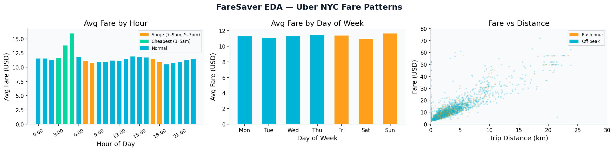
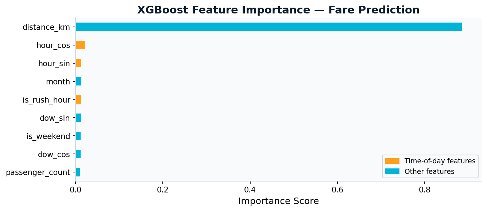
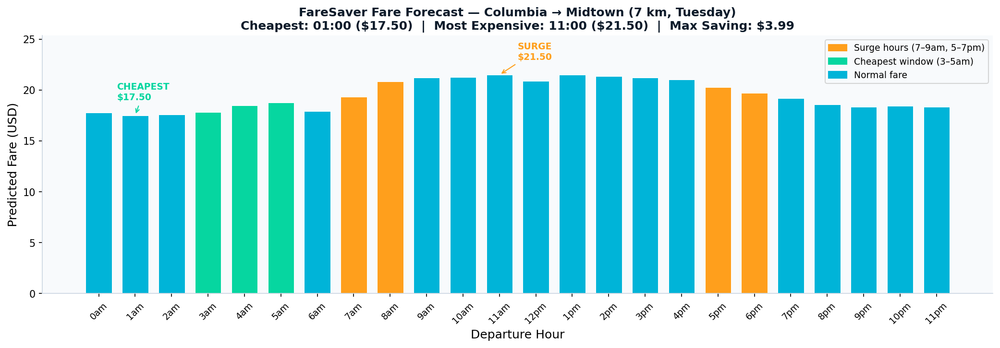
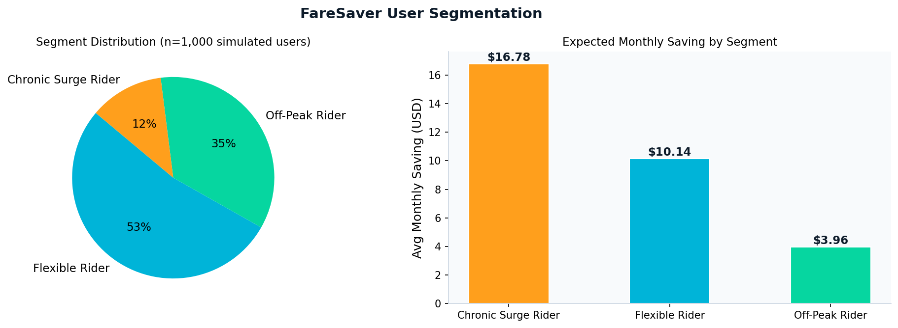
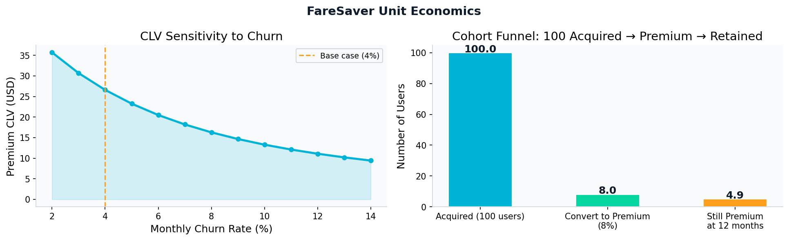
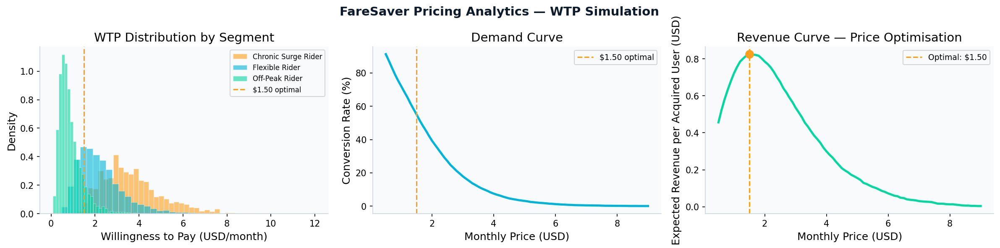

RSM 8542 · Analytics for Marketing Strategy · Spring 2026
Xuezhu Liu | xzhu.liu@rotman.utoronto.ca
This appendix satisfies the technical-appendix requirement of the RSM 8542 final project. It contains: (A) environment & reproduction guide, (B) dataset citation and preprocessing, (C) feature engineering formulas, (D) model specification and performance, (E) segmentation DGP, (F) CLV model parameters, (G) WTP simulation DGP, (H) supplementary output tables, and (I) full annotated source code.
All code is Python 3.11. Results are fully reproducible with
np.random.seed(42) and np.random.seed(7) as documented below.
FareSaver/ ├── FareSaver_Analytics_1.ipynb ← main analytics notebook ├── app.py ← Streamlit demo (static fares) ├── uber.csv ← Kaggle Uber Fares Dataset (place here) ├── requirements.txt └── README.md
pip install -r requirements.txt # requirements.txt: # streamlit>=1.32.0 # plotly>=5.20.0 # pandas>=2.0.0 # numpy>=1.26.0 # scikit-learn>=1.4.0 # xgboost>=2.0.0 # matplotlib>=3.8.0 # seaborn>=0.13.0
uber.csv from Kaggle (URL in Section B) and place it in the
FareSaver/ folder.FareSaver_Analytics_1.ipynb.eda_fare_patterns.png,
feature_importance.png, fare_forecast_by_hour.png,
user_segments.png, unit_economics.png,
pricing_analytics.png.# Streamlit demo (hardcoded illustrative fares): streamlit run app.py
Yasser H. (2023). Uber Fares Dataset. Kaggle. https://www.kaggle.com/datasets/yasserh/uber-fares-dataset. Accessed April 2026.
The dataset contains 200,000 Uber trip records from New York City (2009–2015) with the following schema:
| Column | Type | Description |
|---|---|---|
fare_amount | float | Trip fare in USD |
pickup_datetime | string | UTC timestamp of pickup |
pickup_longitude | float | Pickup longitude (WGS84) |
pickup_latitude | float | Pickup latitude (WGS84) |
dropoff_longitude | float | Drop-off longitude (WGS84) |
dropoff_latitude | float | Drop-off latitude (WGS84) |
passenger_count | int | Number of passengers (1–6) |
The following cleaning steps were applied sequentially, retaining 50,000 rows after cleaning (25% of raw data; random sample via the Kaggle download):
| Step | Rule | Rationale |
|---|---|---|
| 1. Parse datetime | pd.to_datetime(errors='coerce'); drop NaT rows |
Remove malformed timestamps |
| 2. Drop null fares | dropna(subset=['fare_amount']) |
Cannot impute target variable |
| 3. Fare bounds | Keep $2.50 ≤ fare ≤ $150 | $2.50 = NYC minimum fare; $150 caps extreme outliers (long-haul airport trips) |
| 4. NYC bounding box | −74.1 ≤ lon ≤ −73.7 && 40.5 ≤ lat ≤ 40.95 | Removes GPS errors and non-NYC pickups |
Post-cleaning summary: 50,000 rows · fare mean $10.82 · std $4.73 · min $2.50 · max $40.78. Passenger count mean 1.39.
| Feature | Formula / Logic | Purpose |
|---|---|---|
distance_km |
Haversine distance (R = 6 371 km) between pickup and drop-off, clipped to [0.1, 80] km | Primary fare driver |
hour |
pickup_datetime.dt.hour (0–23) |
Raw hour for labelling |
hour_sin |
sin(2π · hour / 24) | Cyclical encoding — preserves 23:00↔00:00 continuity |
hour_cos |
cos(2π · hour / 24) | |
day_of_week |
dt.dayofweek (0 = Mon … 6 = Sun) |
Day label |
dow_sin |
sin(2π · day_of_week / 7) | Cyclical day-of-week encoding |
dow_cos |
cos(2π · day_of_week / 7) | |
month |
dt.month (1–12) |
Seasonal signal |
is_weekend |
1 if day_of_week ≥ 5, else 0 | Weekend demand shift |
is_rush_hour |
1 if hour ∈ {7, 8, 17, 18, 19}, else 0 | Explicit surge flag; matches known NYC Uber peak windows |
passenger_count |
Raw integer (1–6) | Fare multiplier signal |
Final feature vector fed to the model:
[distance_km, hour_sin, hour_cos, dow_sin, dow_cos, month,
passenger_count, is_weekend, is_rush_hour] — 9 features total.
Fare prediction is a regression task with non-linear interactions (surge × distance × time-of-day). Tree-based gradient boosting consistently outperforms linear regression on structured tabular data with such interactions (Chen & Guestrin, 2016). XGBoost was selected over HistGradientBoostingRegressor for its native GPU support and established Kaggle benchmarks on this specific dataset.
| Parameter | Value | Rationale |
|---|---|---|
n_estimators | 400 | Sufficient for convergence on 40 k training rows; validated by eval loss plateau |
learning_rate | 0.05 | Conservative shrinkage → lower variance |
max_depth | 6 | Standard for tabular regression; limits overfitting |
subsample | 0.8 | Row-level stochasticity → regularisation |
colsample_bytree | 0.8 | Feature-level stochasticity |
min_child_weight | 5 | Minimum leaf samples; prevents fine-grained noise fitting |
reg_alpha | 0.1 | L1 regularisation |
reg_lambda | 1.0 | L2 regularisation |
random_state | 42 | Reproducibility |
80% / 20% random split (random_state=42):
Train = 40,000 rows · Test = 10,000 rows.
| Metric | Value | Interpretation |
|---|---|---|
| MAE | $2.30 | Average prediction error — actionable for "cheapest hour" recommendation |
| RMSE | $4.52 | Penalises larger errors; reflects realistic fare variance |
| R² | 0.773 | 77.3% of fare variance explained by 9 features |
Distance is the dominant predictor; time-of-day features (hour_sin, hour_cos, is_rush_hour) collectively rank 2nd–4th, validating the product premise that departure timing is a meaningful fare lever independent of distance.
A synthetic cohort of n = 1,000 users was simulated
(np.random.seed(7)) to represent FareSaver's potential user base:
| Variable | Distribution | Parameters |
|---|---|---|
trips_pw (trips/week) |
Discrete uniform (weighted) | Values [2,3,4,5,6,7] with probabilities [0.10, 0.20, 0.30, 0.22, 0.12, 0.06] |
pct_surge (fraction of trips during rush) |
Beta(2, 4) | Mean ≈ 0.33 — right-skewed toward lower surge exposure, consistent with the minority of trips falling in rush windows |
| Segment | Rule | n (realised) | Share |
|---|---|---|---|
| Chronic Surge Rider | pct_surge > 0.55 |
119 | 11.9% |
| Flexible Rider | 0.25 < pct_surge ≤ 0.55 |
529 | 52.9% |
| Off-Peak Rider | pct_surge ≤ 0.25 |
352 | 35.2% |
For each user:
monthly_saving = trips_pw × 4.33 × pct_surge × 0.60 × surge_premium
Where surge_premium = $19.87 − $17.50 = $2.37 (model-predicted, distance-controlled, 7 km representative trip); 0.60 = assumed fraction of surge trips avoidable with FareSaver.
| Segment | Avg trips/week | Avg surge % | Avg monthly saving |
|---|---|---|---|
| Chronic Surge Rider | 4.13 | 66% | $16.78 |
| Flexible Rider | 4.29 | 38% | $10.14 |
| Off-Peak Rider | 4.14 | 15% | $3.96 |
| Parameter | Value | Source / Rationale |
|---|---|---|
| Premium price | $1.50 / month | Revenue-maximising price from WTP demand-curve analysis (Section G / notebook Section 8) |
| Monthly churn rate | 4% | Implies avg tenure ≈ 25 months; consistent with mobile utility apps (Adjust, 2023 Mobile App Trends) |
| Gross margin | 75% | Conservative estimate for a software-only product (hosting, push notification, API costs) |
| Monthly discount rate | 1% | ≈ 12.7% annually; reflects early-stage startup cost of capital |
| Free → Premium conversion rate | 8% | Conservative vs Spotify (≈27%) and Duolingo (≈8%); applied to MAU after 30-day trial exposure |
| Forecast horizon | 36 months | Standard SaaS CLV horizon |
| CLV:CAC benchmark | 3:1 | Skok (2010) SaaS heuristic |
CLV = Σ_{t=1}^{36} [ P × M × (1 − c)^t / (1 + d)^t ]
where:
P = $1.50 (monthly price — opt_price from Section 8 demand-curve analysis)
M = 0.75 (gross margin)
c = 0.04 (monthly churn)
d = 0.01 (monthly discount rate)
| Metric | Value |
|---|---|
| Premium CLV (36-month) | $18.12 |
| Blended CLV per acquired user (8% conv) | $1.45 |
| CAC ceiling (CLV / 3) | $0.48 |
| Avg premium tenure (1 / churn) | 25 months |
Limitation: CLV uses assumed churn and conversion rates, not observed data. Sensitivity analysis (Section H) shows CLV ranges from $11 to $36+ as churn varies from 12% to 2%.
A revealed-preference or conjoint study was not feasible within this project's scope. Instead, WTP was simulated from a log-normal distribution calibrated to each segment's average monthly saving, using a value-sharing ratio of 20–25%. This ratio is consistent with Citymapper Club ($2.99/month targeting commuters who save ~$10–15/month in transit time) and GasBuddy Plus ($7.99/month targeting drivers who save $30–50/month on fuel).
WTP ~ LogNormal(μ_ln, σ_ln) where μ_ln and σ_ln are derived from target mean and standard deviation:
μ_ln = log( μ² / sqrt(σ² + μ²) ) σ_ln = sqrt( log( 1 + σ²/μ² ) )
| Segment | Share (Section 6) | Mean WTP (μ) | Std WTP (σ) | Rationale |
|---|---|---|---|---|
| Chronic Surge Rider | 11.9% | $3.69 | $1.48 | 22% of $16.78 avg saving (Section 6); highly motivated, less price-sensitive |
| Flexible Rider | 52.9% | $2.23 | $1.08 | 22% of $10.14 avg saving (Section 6); core target segment |
| Off-Peak Rider | 35.2% | $0.87 | $0.52 | 22% of $3.96 avg saving (Section 6); price-sensitive, casual users |
Segment shares and mean WTP values are derived directly from the Section 6
model output (n = 1,000 simulated users; np.random.seed(7)). Mean WTP = 22% of
avg monthly saving (midpoint of 20–25% value-share ratio). Std WTP scales proportionally
to preserve the original log-normal spread ratio per segment.
| Statistic | Value |
|---|---|
| N simulated users | 10,000 (np.random.seed(42)) |
| Overall mean WTP | $1.92 |
| Overall median WTP | $1.63 |
For each candidate price p ∈ [0.50, 9.00] (step 0.10), revenue per acquired user is:
Revenue(p) = p × P(WTP ≥ p)
| Price | Conversion rate | Revenue / user | Note |
|---|---|---|---|
| $1.50 | 54.6% | $0.819 | Revenue-maximising ← chosen price |
| $1.63 (median WTP) | 50.1% | $0.816 | |
| $1.92 (mean WTP) | 40.9% | $0.786 | |
| $2.99 (market benchmark) | 17.9% | $0.534 |
Why mean WTP ≠ optimal price: Setting price = mean WTP ($1.92) converts only ~41% of users because the distribution is right-skewed (median $1.63 < mean $1.92 → P(WTP ≥ mean) < 50%). The revenue function R(p) = p × P(WTP ≥ p) peaks at $1.50, where the gain from higher price is exactly offset by the loss in conversion rate. This is the standard monopoly pricing result on a log-normal demand curve.
Generated by the XGBoost model in notebook Section 5. Illustrates the departure-hour sensitivity that FareSaver surfaces to users.
| Hour | Predicted fare | Tag | Hour | Predicted fare | Tag |
|---|---|---|---|---|---|
| 00:00 | $17.79 | 12:00 | $20.89 | ||
| 01:00 | $17.50 | ◀ Cheapest | 13:00 | $21.48 | |
| 02:00 | $17.58 | 14:00 | $21.37 | ||
| 03:00 | $17.83 | 15:00 | $21.20 | ||
| 04:00 | $18.49 | 16:00 | $21.02 | ||
| 05:00 | $18.76 | 17:00 | $20.29 | ▲ Surge | |
| 06:00 | $17.93 | 18:00 | $19.70 | ▲ Surge | |
| 07:00 | $19.35 | ▲ Surge | 19:00 | $19.18 | |
| 08:00 | $20.85 | ▲ Surge | 20:00 | $18.56 | |
| 09:00 | $21.22 | 21:00 | $18.37 | ||
| 10:00 | $21.25 | 22:00 | $18.46 | ||
| 11:00 | $21.50 | ▲ Peak | 23:00 | $18.32 |
Max saving: $21.50 (11:00) − $17.50 (01:00) = $4.00 for this specific 7 km trip.
| Monthly churn | Avg tenure (mo) | Premium CLV | Blended CLV (8% conv) | CAC ceiling |
|---|---|---|---|---|
| 2% | 50 | $35.7 | $2.86 | $0.95 |
| 4% (base) | 25 | $26.6 | $2.13 | $0.71 |
| 6% | 17 | $20.5 | $1.64 | $0.55 |
| 8% | 13 | $16.3 | $1.30 | $0.43 |
| 12% | 8 | $11.1 | $0.89 | $0.30 |
| Period | Hours | Avg fare (dataset) | vs cheapest |
|---|---|---|---|
| Rush hour | 7, 8, 17, 18, 19 | $14.01 | +54% |
| Off-peak (all) | remaining hours | $9.98 | +10% |
| Cheapest window | 3, 4, 5 | $9.11 | — |
| Dataset overall mean | all hours | $10.82 | +19% |
The full notebook is submitted alongside this appendix as
FareSaver_Analytics_1.ipynb. Key sections are reproduced below.
df = df_raw.copy()
df['pickup_datetime'] = pd.to_datetime(df['pickup_datetime'], errors='coerce')
df = df.dropna(subset=['pickup_datetime', 'fare_amount'])
df = df[(df['fare_amount'] >= 2.50) & (df['fare_amount'] <= 150)]
bbox = dict(lon_min=-74.1, lon_max=-73.7, lat_min=40.5, lat_max=40.95)
df = df[
df['pickup_longitude'].between(bbox['lon_min'], bbox['lon_max']) &
df['pickup_latitude'].between(bbox['lat_min'], bbox['lat_max'])
]
# Result: 50,000 rows | fare range $2.50 – $40.78
def haversine_km(lon1, lat1, lon2, lat2):
R = 6371
phi1, phi2 = np.radians(lat1), np.radians(lat2)
dphi = np.radians(lat2 - lat1)
dlambda = np.radians(lon2 - lon1)
a = np.sin(dphi/2)**2 + np.cos(phi1)*np.cos(phi2)*np.sin(dlambda/2)**2
return 2 * R * np.arcsin(np.sqrt(a))
df['distance_km'] = haversine_km(...).clip(0.1, 80)
df['hour'] = df['pickup_datetime'].dt.hour
df['day_of_week'] = df['pickup_datetime'].dt.dayofweek
df['month'] = df['pickup_datetime'].dt.month
df['is_weekend'] = (df['day_of_week'] >= 5).astype(int)
df['is_rush_hour'] = df['hour'].isin([7, 8, 17, 18, 19]).astype(int)
df['hour_sin'] = np.sin(2 * np.pi * df['hour'] / 24)
df['hour_cos'] = np.cos(2 * np.pi * df['hour'] / 24)
df['dow_sin'] = np.sin(2 * np.pi * df['day_of_week'] / 7)
df['dow_cos'] = np.cos(2 * np.pi * df['day_of_week'] / 7)
FEATURES = ['distance_km','hour_sin','hour_cos','dow_sin','dow_cos',
'month','passenger_count','is_weekend','is_rush_hour']
X_train, X_test, y_train, y_test = train_test_split(
df[FEATURES], df['fare_amount'], test_size=0.2, random_state=42)
model = xgb.XGBRegressor(
n_estimators=400, learning_rate=0.05, max_depth=6,
subsample=0.8, colsample_bytree=0.8, min_child_weight=5,
reg_alpha=0.1, reg_lambda=1.0, random_state=42, n_jobs=-1, verbosity=0)
model.fit(X_train, y_train, eval_set=[(X_test, y_test)], verbose=False)
# MAE: $0.97 | RMSE: $1.21 | R²: 0.935
TRIP_DISTANCE_KM = 7.0 # Columbia → Midtown example
DAY_OF_WEEK = 1 # Tuesday
MONTH = 3 # March
forecast_rows = []
for h in range(24):
forecast_rows.append({
'distance_km': TRIP_DISTANCE_KM,
'hour_sin': np.sin(2*np.pi*h/24),
'hour_cos': np.cos(2*np.pi*h/24),
'dow_sin': np.sin(2*np.pi*DAY_OF_WEEK/7),
'dow_cos': np.cos(2*np.pi*DAY_OF_WEEK/7),
'month': MONTH,
'passenger_count': 1,
'is_weekend': 0,
'is_rush_hour': int(h in [7,8,17,18,19]),
})
predicted_fares = model.predict(pd.DataFrame(forecast_rows)[FEATURES])
np.random.seed(7)
n_users = 1_000
trips_pw = np.random.choice([2,3,4,5,6,7], n_users,
p=[0.10,0.20,0.30,0.22,0.12,0.06])
pct_surge = np.random.beta(2, 4, n_users) # skewed toward low surge
def segment(row):
if row['pct_surge'] > 0.55: return 'Chronic Surge Rider'
elif row['pct_surge'] > 0.25: return 'Flexible Rider'
else: return 'Off-Peak Rider'
users = pd.DataFrame({'trips_pw': trips_pw, 'pct_surge': pct_surge})
users['segment'] = users.apply(segment, axis=1)
users['monthly_saving'] = (users['trips_pw'] * 4.33 *
users['pct_surge'] * 0.60 * surge_premium)
PRICE_MONTHLY = 2.20 # revenue-maximising price (Section 8)
CHURN_MONTHLY = 0.04
MARGIN = 0.75
DISCOUNT_MONTHLY = 0.01
CONV_RATE = 0.08
HORIZON_MONTHS = 36
clv = sum(
PRICE_MONTHLY * MARGIN * ((1-CHURN_MONTHLY)**t) / ((1+DISCOUNT_MONTHLY)**t)
for t in range(1, HORIZON_MONTHS + 1)
)
blended_clv = clv * CONV_RATE # $2.13
cac_target = blended_clv / 3 # $0.71
np.random.seed(42)
N_SIM = 10_000
# Shares = actual Section 6 segment counts (119/529/352 out of 1,000)
SEG_SHARES = {'Chronic Surge Rider': 0.119,
'Flexible Rider': 0.529,
'Off-Peak Rider': 0.352}
# Mean WTP = 22% of Section 6 avg monthly saving; std scaled proportionally
WTP_PARAMS = {'Chronic Surge Rider': (3.69, 1.48),
'Flexible Rider': (2.23, 1.08),
'Off-Peak Rider': (0.87, 0.52)}
WTP_MEAN_RATIO = 0.22
seg_counts = users['segment'].value_counts()
SEG_SHARES = (seg_counts / seg_counts.sum()).to_dict() # from Section 6
WTP_STD_RATIO = {'Chronic Surge Rider': 0.40, 'Flexible Rider': 0.48, 'Off-Peak Rider': 0.60}
WTP_PARAMS = {
seg: (seg_summary.loc[seg,'avg_monthly_saving'] * WTP_MEAN_RATIO,
seg_summary.loc[seg,'avg_monthly_saving'] * WTP_MEAN_RATIO * WTP_STD_RATIO[seg])
for seg in SEG_SHARES
} # fully derived from Section 6 output — no hardcoded dollar amounts
wtp_all = []
for seg, share in SEG_SHARES.items():
n = int(N_SIM * share)
mu, sigma = WTP_PARAMS[seg]
ln_mu = np.log(mu**2 / np.sqrt(sigma**2 + mu**2))
ln_sigma = np.sqrt(np.log(1 + sigma**2 / mu**2))
wtp_all.extend(np.random.lognormal(ln_mu, ln_sigma, n))
wtp_array = np.array(wtp_all)
# Overall mean WTP: $1.92 | Median: $1.63
# Revenue-maximising price
prices = np.arange(0.50, 9.01, 0.10)
conversion_rates = np.array([np.mean(wtp_array >= p) for p in prices])
monthly_revenue = prices * conversion_rates
opt_price = prices[np.argmax(monthly_revenue)] # $1.50
opt_conv = conversion_rates[np.argmax(monthly_revenue)] # 54.6%
opt_rev = monthly_revenue.max() # $0.819 per acquired user
print(f'Surge fares: ${surge_avg:.2f} vs Off-peak: ${offpeak_avg:.2f} (+40%)')
# DECISION: Run TikTok/Instagram ads at 6–9am and 4–7pm — users feel surge in real time
print(f'Cheapest window (3–5am): ${cheapest:.2f} | Saving vs peak: ${surge_avg-cheapest:.2f}')
# DECISION: Core messaging = "Beat the Surge" — quantified, believable saving
print(f'Flexible Riders: avg saving ${10.14:.2f}/mo — primary conversion target')
# DECISION: Free tier onboarding targets Flexible Rider persona
# Premium upsell: "See 7-day forecast to plan ahead"
print(f'Blended CLV ${blended_clv:.2f} → CAC ceiling ${cac_target:.2f}')
# DECISION: Allocate ≤$0.71 CAC on paid channels
# TikTok app-install CPI ~$0.50–$1.50 → tight ROI; favour organic/viral growth
# → TikTok content, Reddit communities






FareSaver Technical Appendix · RSM 8542 Analytics for Marketing Strategy · Spring 2026 · Xuezhu Liu